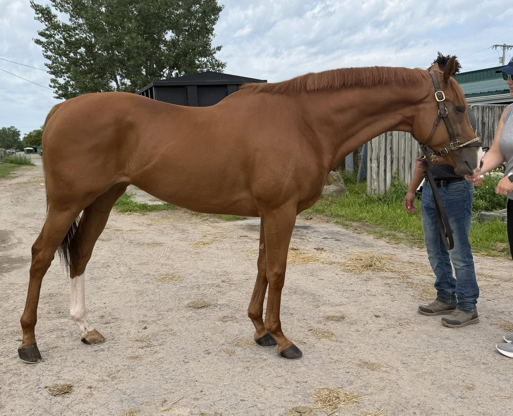
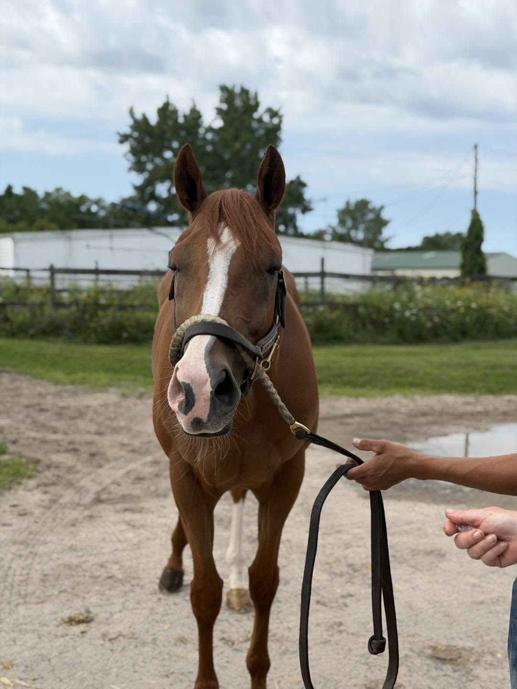
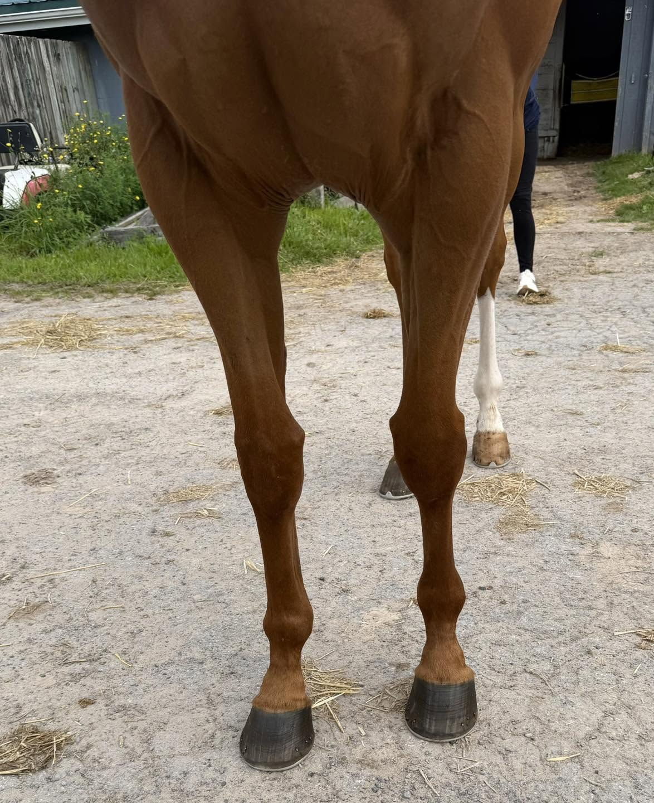
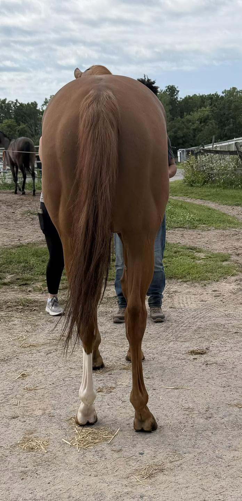

DON ANTONIO, 2020, 16h+, chestnut gelding
If you are looking for a powerhouse with loads of personality, then look no farther than Don Antonio! This guy is a barn favorite and boy does he know it. His connections state that he has no vices in the barn or at the farm. They’ve had him since he was a 2 year old, so they know his entire history. He was gelded late, and was a ridgling, so his connections believe that may be where his high level of confidence comes from. He also very much appreciates being spoiled, loving his routine chiro and PEMF treatments.
Our volunteers were wowed by his compact, well-muscled build and his adorable face. It was evident that Don Antonio was used to attention as he ate up our volunteers’ attention and photo taking from every angle. Don Antonio is reported to be injury free. While he can be high energy as many young racehorses can be, he does not offer a buck or rear. For his jog video, while he was a bit up, he remained respectful of his handler, even with horses of the walking machines nearby getting riled up. He stood while his handler placed a lip chain to see if we could get him to focus and show off his lofty, floaty jog. His connections also sent additional videos of him out training on the track so his movement could be better displayed.
Don Antonio is by Gormley, a son of Malibu Moon, who he likely gets his good looks and loads of personality from. Malibu Moon is known for producing quality eventing offspring. He is out of a Sky Mesa mare, who’s offspring have been noted for being athletic and trainable. This good-looking guy is sure to get you noticed in any arena!



